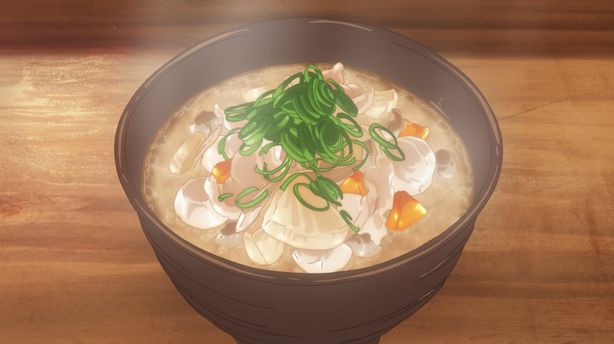

Ramen
Ramen is a popular and flavorful Japanese noodle soup dish.

Miso Soup
Miso soup is a traditional Japanese soup known for its savory and umami-rich flavors.

Onigiri
Onigiri consists of cooked rice that is shaped into a compact, often triangular or cylindrical form and is typically wrapped in a sheet of nori.